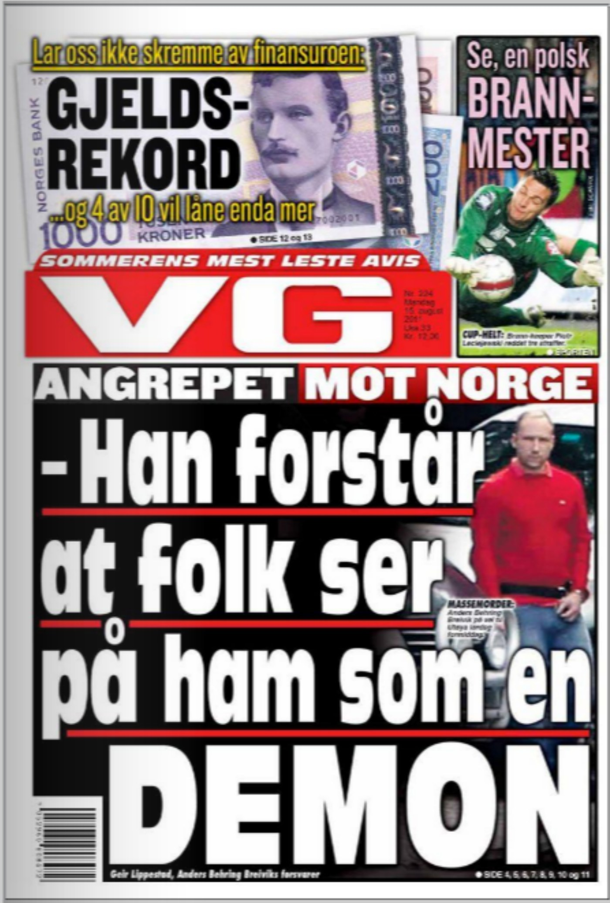
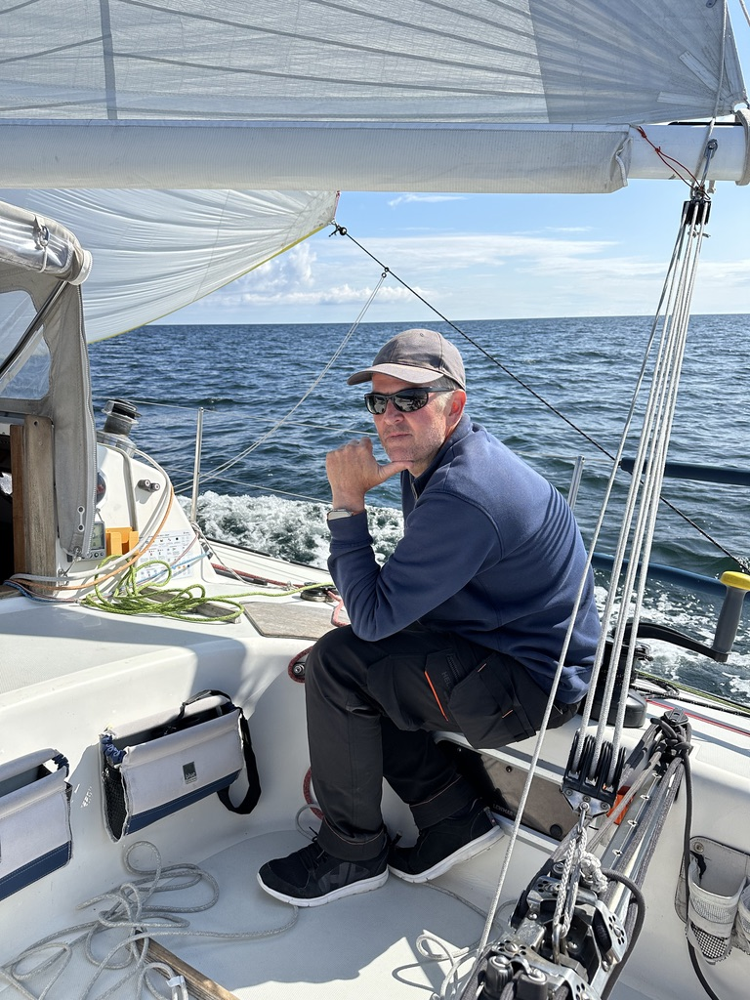

Når retningen er uklar
Vi skiller muligheter fra distraksjoner og gjør valgene tydeligere.
Strategi · systemer · gjennomføring
Waltham Consulting hjelper eiere og ledere med å se mulighetene, velge riktig retning og omsette ideer til løsninger som virker i praksis.
Når vi skaper mest verdi
Vi går inn der det er mange bevegelige deler, uklare prioriteringer eller en idé som ennå ikke har funnet sin form.
Vi kombinerer forretningsforståelse, praktisk problemløsning og nye digitale arbeidsmåter. Målet er alltid det samme: klarhet, fremdrift og målbar verdi.
Vi skiller muligheter fra distraksjoner og gjør valgene tydeligere.
Vi finner flaskehalser og bygger enklere systemer rundt det som betyr mest.
Vi skaper overblikk, samler partene og får arbeidet i bevegelse igjen.
Tjenester
Vi starter konsentrert. Når oppgaven krever flere fag, setter vi sammen riktig kapasitet fra vårt nettverk.
Strategi og prioritering
En konsentrert vurdering av situasjonen, mulighetene og de viktigste beslutningene. Dere får tydelige prioriteringer og en realistisk handlingsplan.
Bestill en innledende samtale →Arbeidsmåter og AI
Vi kartlegger tidstyver, manuelle prosesser og informasjonsflyt, og finner hvor AI, automatisering eller forenkling faktisk gir effekt.
Fra mulighet til marked
Vi utfordrer antakelser, tester behovet og former et første tilbud, en prototype eller en vei til første kunde.
Når noe står fast
Vi rydder i mål, ansvar, dokumentasjon og interesser, og etablerer et enkelt system for beslutninger og fremdrift.
Erfarent, uavhengig motspill
Løpende, fortrolig sparring for eiere og ledere som trenger ærlige spørsmål, nye perspektiver og praktisk dømmekraft.
Utvalgte erfaringer og cases
2000–2025 · Systemer · markedsinnsikt · skalering
InFact begynte med et konkret spørsmål: Hvordan kan omfattende datainnsamling gjøres raskere, mer tilgjengelig og mulig å styre fra hvor som helst?
Svaret ble et automatisert telefonisystem og en virksomhet som koblet teknologi, analyse og kommunikasjon. Meningsmålingene skapte innsikt for kundene, nyheter for mediene og et selvforsterkende momentum for selskapet. I dag lever InFact videre som et nordisk analyse- og kommunikasjonsbyrå.

Kompleks sak · digitalt saksrom
En omfattende lokal plansak var fordelt på dokumenter, høringssvar, myndighetsavgjørelser, nyhetsartikler og ulike versjoner av historien. Det gjorde saken vanskelig å forstå — også for mennesker som ønsket å engasjere seg.
Vi samlet materialet i et digitalt saksrom med tydelig tidslinje, temaer, kilder og forklaringer. Resultatet er en åpen kunnskapsbase som gjør kompleks informasjon søkbar, etterprøvbar og lettere å handle på.
Se BevarNyborgFjord.dk →Eiendom · drift · utvikling
Praktisk utvikling og drift der utleie, kommunikasjon, fysiske forbedringer og daglige behov måtte sees som ett system.
Se Lindholm Business Center →Facility management · kunder · daglig drift
LBC FM er Walthams eksterne og løpende forretningsben. Her møtes utleie av næringslokaler, facility management, leietakerkontakt, lokale samarbeid og hjelp til mindre virksomheter i én praktisk plattform.
Caset viser at rådgivningen vår bygger på daglig drift, virkelige kunder og oppgaver som må fungere i praksis — ikke bare på analyser og ideer.
Besøk LBCFM.dk →Eiendom · AI · hurtigproduksjon
En arvet eiendom hadde stått stille mens familien forsøkte å velge eiendomsmegler. På få dager samlet vi bilder, fakta, dokumenter og områdets historie i en gjennomarbeidet digital forhåndspresentasjon.
Caset viser hvordan AI og en tydelig arbeidsmetode kan gjøre spredt materiale til et profesjonelt beslutnings- og salgsmateriell — raskt, delbart og klart for neste steg.
Se Åhusene 11B →Waltham Loggbok
Observasjoner, erfaringer og ideer om virksomheter, teknologi, eiendommer og mennesker — skrevet underveis. Kort, konkret og uten konsulentspråk.
Verktøy
Bruk vår enkle problemavklaring. Den gir et kort utgangspunkt for en bedre første samtale — uten registrering.
Om oss
Waltham Consulting er grunnlagt av Nikolai Waltham og bygger på flere tiår med entreprenørskap, markedsanalyse, digital utvikling, eiendom og praktisk problemløsning.
Vi arbeider som en fleksibel kjerne med et nettverk av spesialister. Det betyr at kunden møter få mennesker, men at oppgaven kan få den faglige bredden den trenger.
Vi arbeider helst i små, oversiktlige etapper der verdien blir synlig underveis. Hvis det virker, bygger vi videre. Hvis ikke, avslutter vi ordentlig, tar læringen med oss og går videre uten unødige konflikter.

«Vi er nysgjerrige nok til å spørre hva om — og praktiske nok til å få det til å virke.»
Kontakt
En god første samtale skal gi verdi i seg selv. Fortell kort om situasjonen, så finner vi ut om og hvordan vi kan bidra.